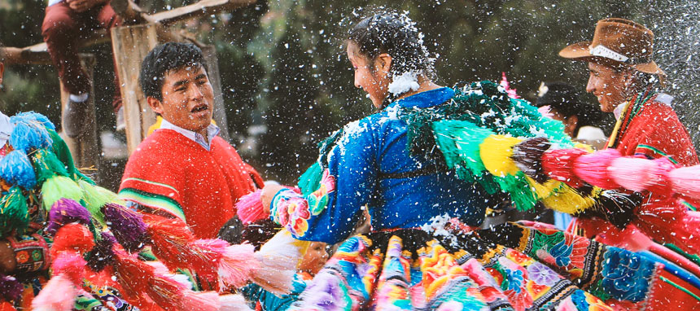
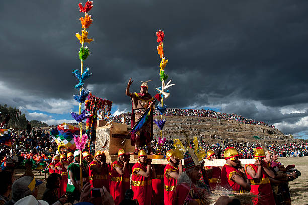

Historia de Montaña de colores
La montaña de los 7 Colores (también llamado Vinicunca o simplemente ‘montaña arcoíris’) es una de las nuevas y mejores atracciones del Perú. Ubicada a más de 100 kilómetros de la ciudad del Cusco, en una cumbre altitudinal situada a 5,200 metros sobre el nivel del mar (m.s.n.m.). Se trata de una formación montañosa teñida de varias tonalidades producto de la compleja combinación de minerales. Las laderas y la cumbre están teñidas de diversas tonos que incluyen el rojo, morado, verde, amarillo, rosado y otras variaciones. Este atractivo turístico estuvo rodeado de hielo hace no muchos años. Desde el 2016, este lugar recibe a cientos de visitantes al día convirtiéndose, junto con Machu Picchu, en uno de los lugares más visitados en Cusco-Perú. A continuación toda la información sobre la Montaña de 7 Colores..

Festividades
| Fecha | Tipo | Lugar | Festividad | Descripción | Imagen |
|---|---|---|---|---|---|
| Febrero-Marzo | Popular y Cultural | Cuzco y ciudades vecinas | Carnavales cusqueños | El Carnaval Cusqueño se celebra principalmente en la ciudad de Cusco, pero también hay celebraciones en pueblos cercanos y comunidades del Valle Sagrado. Las festividades incluyen desfiles, comparsas y danzas tradicionales en las calles de Cusco y alrededores. |  |
| 24-Jun | Religiosa y Cultural | La Plaza Mayor y en los sitios arqueológicos de Sacsayhuamán | Inti Raymi | El Inti Raymi es una celebración que rinde homenaje al sol, la deidad más importante para los antiguos incas. Esta festividad tiene un profundo significado espiritual y cultural , ya que recrea la ceremonia ancestral incaica en la que se celebraba el solsticio de invierno del hemisferio sur. |  |
Leyenda Local
La leyenda de la Montaña de colores: Según la leyenda, los dioses andinos, preocupados por las comunidades que enfrentaban tiempos difíciles, decidieron crear un símbolo de esperanza. Durante la noche, Pachamama (la Madre Tierra) y Viracocha (el creador) unieron sus poderes para crear una montaña con los colores del arcoíris.